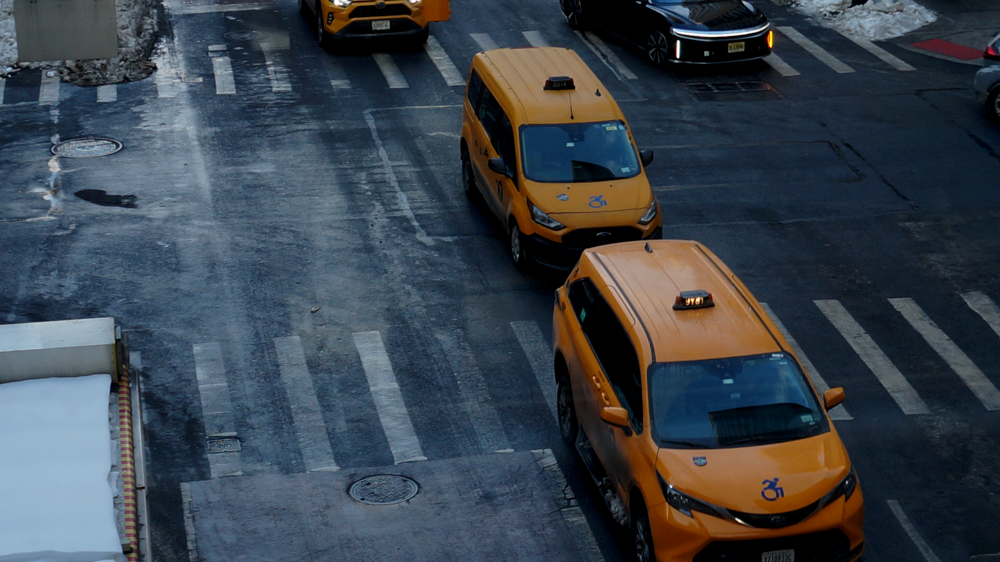

I chose this image because I thought it captures an important part of NYC which are the classic taxis. The yellow taxis are a New York city staple and the three back to back examples give an example to the mass amount of taxis in nyc. When editing this photo I cropped it down to 1920 px by 1020 px, Then I edited the photo using the levels in the adjustment layer and made the blues in the photo deeper, cooling the photo. The day was rainy and cloudy and the editing made that show a bit more.